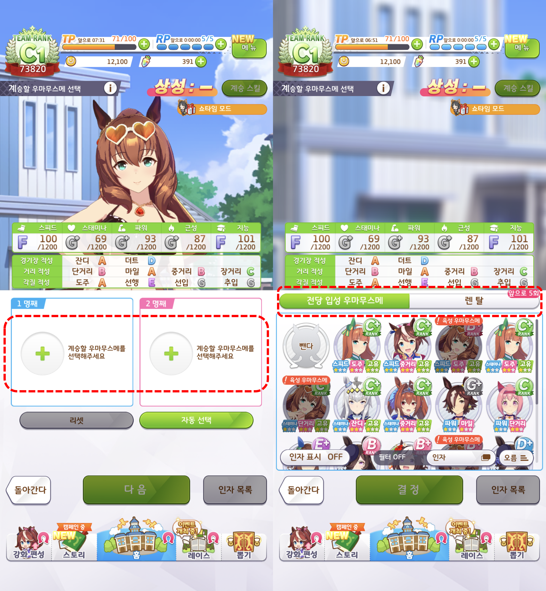
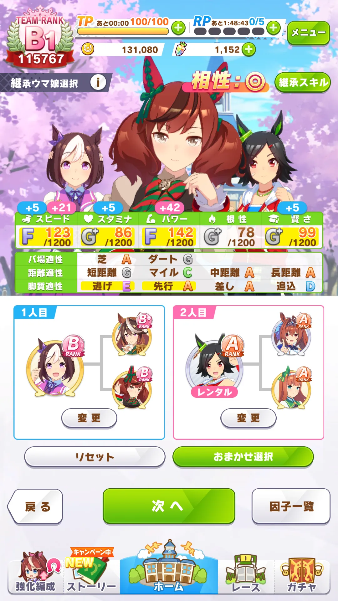

01 시장과 판매 방식2-1 · 온라인게임 무료 플레이 + 게임 내 결제 퍼즐 → 성장·수집 → IAP로 이어지는 익숙한 수익 모델.
2-2~5 · 동인·미소녀게임 게임 구매 + 추가 콘텐츠 구매 완결된 본편을 한 번에 판매하고, 후일담·새 캐릭터를 DLC로 판매.
조사한 동인 게임 상위 100작품의 장르 구성 시뮬레이션 45작품 RPG 41작품 그 외 14작품 (ADV 4작품 포함)
시뮬레이션과 RPG가 다수를 차지해, 관계 육성·경영·동료 공략 RPG를 후보에 포함했습니다.
2026.09.22 수집 · 현재 가격 × 누적 판매수로 정렬한 상위 100건의 작품 수입니다.집계 근거 02 게임 5종 제안5종의 핵심 플레이와 판매 방식을 비교한 뒤, 각 게임의 상세 내용과 플레이 흐름을 볼 수 있습니다. 모든 관계 대상은 성인입니다.
게임 / 구조 참고 핵심 플레이·구매 매력 매출 구조
8층이 가장 잘하는 퍼즐 + IAP
퍼즐 보상·가챠로 원형 수집 → 외형·성격의 확률 합성·계승.
첫 매출 무료 시작 → 유료 가챠 결제
추가 매출 새 원형·의상·추가 AI 이용 팩
7층·8층 노하우로 빠르고 효율적으로 제작
하루 일정 선택 + 내 취향을 기억하는 AI 대화.
첫 매출 게임 구매 (본편)
추가 매출 DLC 구매 — 연인 후일담
영업·살롱 확장 + 성격이 다른 세 마녀와 AI 대화.
첫 매출 게임 구매 (본편)
추가 매출 DLC 구매 — 새 마녀·예약 테마
2인 파티 턴제 전투·동료 성장 + 원정을 기억하는 AI 대화.
첫 매출 게임 구매 (본편)
추가 매출 DLC 구매 — 새 동료·전용 원정
낮의 AI 메시지 → 밤의 만남·요괴 본모습 공개.
첫 매출 게임 구매 (본편)
추가 매출 DLC 구매 — 연애 후일담
2-1. 계승 공방 — 나만의 파트너온라인게임 · にじGAME F2P + IAP
구조 참고 · 우마무스메 두 계승 대상 선택 → 인자·계보·상성 비교
퍼즐 보상과 가챠로 캐릭터 원형을 모은다.
사업상 강점 퍼즐로 즐기고, 성장·수집에 결제.
퍼즐 → 보상 → 성장·수집 → IAP의 익숙한 흐름에
판매 방식 첫 매출 게임 내 결제 (IAP) 추가 매출 새 원형·테마 의상·추가 대화와 이미지 팩 다시 사는 이유 새 파트너를 갖고 싶은 욕구 + 기존 파트너와 더 가까워지고 싶은 애착.
구조 참고 · 우마무스메 계승 화면
완성 캐릭터를 뽑고 끝내는 대신,
우마무스메에서 가져올 것은 계승할 두 캐릭터·인자·계보를 비교하는 선택의 재미 .외형·성격·희귀 특징이 달라지는 확률 합성 으로 확장한다.

① 두 자리 선택 + 후보 비교 보유 캐릭터의 인자·별 등급을 보고 계승 대상을 고른다.공방 적용: 원형 A·B를 고르고 외형·성격·희귀 인자를 비교.
② 계보 + 상성 + 결과 미리 보기 각 캐릭터의 이전 계보와 상성, 능력 상승을 한 화면에 보여준다.공방 적용: 특징의 출처와 조합별 발현 확률을 합성 전에 표시.
01 · 수집 퍼즐·가챠로 원형 확보 새 원형이 새 조합의 재료가 된다.
02 · 선택 두 원형의 인자 비교 취향에 맞는 외형·성격을 노린다.
03 · 합성 확률로 새 파트너 탄생 같은 조합에서도 결과가 달라진다.
04 · 계승 좋은 인자를 다음 조합에 원형과 기존 파트너의 기억은 보관.
돈을 쓰는 이유: 갖고 싶은 특징을 가진 새 원형 가챠 .
우마무스메는 육성 능력·스킬 등의 인자를 계승하는 게임이며, 외형·성격을 섞어 새 캐릭터를 뽑는 구조는 아니다. 외형 합성과 아래 확률은 이번 안의 제안이다.Cygames 공식 FAQ 로 확인. 화면: 제공받은 우마무스메 캡처 · © Cygames, Inc. · 이미지를 누르면 원본 보기.
왼쪽에서 오른쪽, 위에서 아래로 읽는 화면 예시. 구조 참고 · 프린세스 메이커 일정 선택 → 관계 성장 → 다른 엔딩
함께할 하루를 고르면, 그녀가 내 취향과 약속을 기억한다.
사업상 강점 관계 육성 게임의 구매 수요를 공략.
관계 육성은 플랫폼에서 판매 사례가 확인된 상품.
판매 방식 첫 매출 게임 구매 (본편) 추가 매출 DLC 구매 다시 사는 이유 본편에서 생긴 애착이 여행·기념일·새로운 동거 이야기의 구매 이유.
왼쪽에서 오른쪽, 위에서 아래로 읽는 화면 예시. 마녀를 골라 살롱을 운영하고, 폐점 후 둘만의 비밀을 나눈다.
판매 방식 첫 매출 게임 구매 (본편) 추가 매출 DLC 구매 다시 사는 이유 좋아하는 마녀의 다른 모습, 새 성격의 마녀를 만나고 싶은 수집 욕구.
왼쪽에서 오른쪽, 위에서 아래로 읽는 화면 예시. 마음에 드는 동료와 짧은 원정을 떠난다.
판매 방식 첫 매출 게임 구매 (본편) 추가 매출 DLC 구매 다시 사는 이유 새 동료를 만나고, 최애 동료와 더 많은 모험을 즐기고 싶은 기대.
왼쪽에서 오른쪽, 위에서 아래로 읽는 화면 예시. 낮에는 비밀 메시지, 밤에는 나만 아는 본모습.
판매 방식 첫 매출 게임 구매 (본편) 추가 매출 DLC 구매 다시 사는 이유 비밀을 공유한 연인과, 끝난 뒤에도 이야기를 이어가고 싶은 애착.
왼쪽에서 오른쪽, 위에서 아래로 읽는 화면 예시. 근거 자료 · 시장 해석과 참고 게임 2-1의 유입 과제는 카테고리 접근성입니다. pinxAI와 같은 온라인게임으로 묶일 경우, 제공된 메뉴에서 동인·미소녀게임보다 뒤에 배치됩니다. 메뉴 위치로 시장 규모가 작다고 판단한 것은 아닙니다.
ADV는 같은 상위 표본에서 4작품입니다. 비밀연애는 큰 장르 수요가 입증된 안보다 대화·서사 역량을 직접 상품화하는 선택지입니다.
상위 표본의 시뮬레이션은 일반 경영 장르와 같지 않습니다.
동거·관계형: ふたりぐらし — 동거·일상·관계 관련 태그. 상호작용·의상형: 夏のサカり — 3D·의상 변경·상호작용 관련 태그. 촬영·직업 설정형: AVカントクLIFE! — 촬영 설정과 3D·영상 형식. 2026.09.22 수집 자료를 현재가 × 누적 판매수 기준으로 정렬한 상위 100건 중 시뮬레이션 45건, RPG 41건.기존 집계 · 원본 표본
구매형 본편은 정해진 장·사건·엔딩으로 완결합니다.
레퍼런스의 실제 역할 · LoveR Kiss 는 의상·촬영 기능을, Bunny Garden 은 대화 기억·관계 진행과 의상 반영을 공식적으로 소개합니다. 데이브 더 다이버 는 탐험·전투·식당 경영, 수상한 메신저 는 여성향 메시지 연애 게임으로 소개됩니다.
유명 게임 태그는 진행 구조 설명용입니다.
にじGAME · 미소녀게임 참고 · 합성·승계 원안